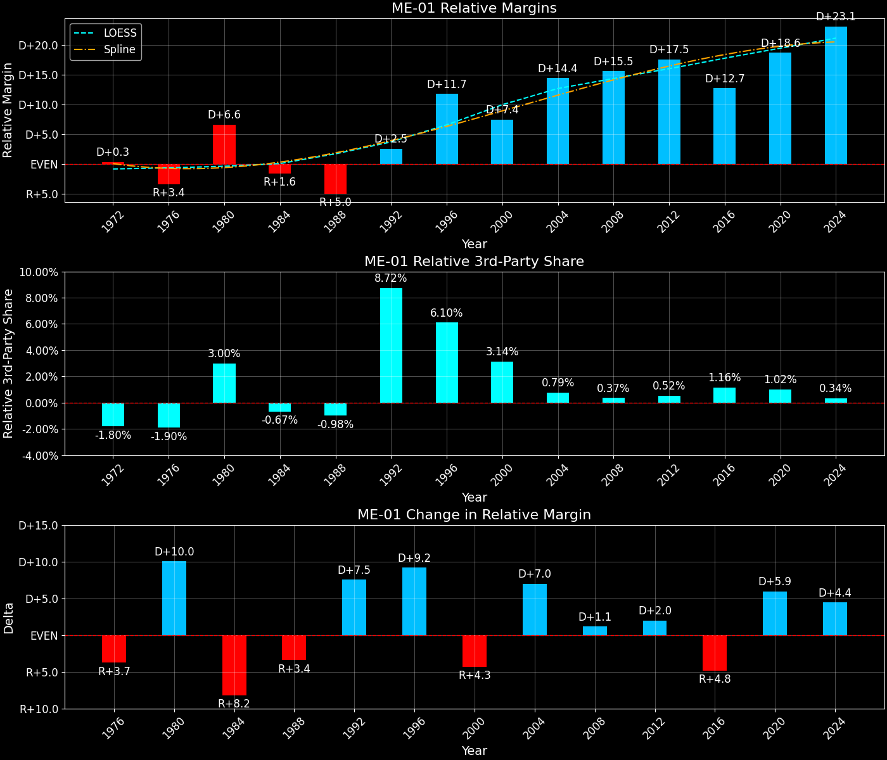

Maine's 1st Congressional District (ME-01)

Margins · 3rd-Party share · Pres. deltas

Relative margins · Relative 3rd-Party · Rel. deltas
Maine's 1st Congressional District (ME-01) — Total Data
| Year | EVs | D | R | State Margin | Nat. Margin | Rel. Margin | Total votes |
|---|---|---|---|---|---|---|---|
| 1968 | 1 | 112,843(55.1%) | 88,406(43.2%) | D+11.9 | R+0.6 | D+12.5 | 204,639 |
| 1972 | 1 | 85,028(38.6%) | 135,388(61.4%) | R+22.8 (Δ R+34.8) | R+23.5 (Δ R+23.0) | D+0.7 (Δ R+11.8) | 220,516 |
| 1976 | 1 | 123,598(49.1%) | 127,019(50.4%) | R+1.4 (Δ D+21.5) | D+2.2 (Δ D+25.7) | R+3.6 (Δ R+4.3) | 251,898 |
| 1980 | 1 | 117,613(42.0%) | 126,274(45.1%) | R+3.1 (Δ R+1.7) | R+9.9 (Δ R+12.1) | D+6.8 (Δ D+10.4) | 280,208 |
| 1984 | 1 | 117,450(40.0%) | 175,472(59.7%) | R+19.7 (Δ R+16.6) | R+18.1 (Δ R+8.2) | R+1.6 (Δ R+8.4) | 293,979 |
| 1988 | 1 | 131,078(43.3%) | 169,292(55.9%) | R+12.6 (Δ D+7.1) | R+7.7 (Δ D+10.4) | R+4.9 (Δ R+3.3) | 302,762 |
| 1992 | 1 | 145,191(39.8%) | 115,697(31.7%) | D+8.1 (Δ D+20.7) | D+5.6 (Δ D+13.3) | D+2.5 (Δ D+7.4) | 365,200 |
| 1996 | 1 | 165,053(52.0%) | 100,851(31.8%) | D+20.2 (Δ D+12.2) | D+8.6 (Δ D+3.0) | D+11.7 (Δ D+9.2) | 317,121 |
| 2000 | 1 | 176,293(50.5%) | 148,618(42.6%) | D+7.9 (Δ R+12.3) | D+0.5 (Δ R+8.0) | D+7.4 (Δ R+4.3) | 348,934 |
| 2004 | 1 | 211,703(55.1%) | 165,824(43.1%) | D+11.9 (Δ D+4.0) | R+2.5 (Δ R+3.0) | D+14.4 (Δ D+7.0) | 384,392 |
| 2008 | 1 | 232,145(60.5%) | 144,604(37.7%) | D+22.8 (Δ D+10.9) | D+7.3 (Δ D+9.7) | D+15.6 (Δ D+1.2) | 383,626 |
| 2012 | 1 | 221,952(59.4%) | 142,573(38.1%) | D+21.2 (Δ R+1.6) | D+3.9 (Δ R+3.4) | D+17.4 (Δ D+1.8) | 373,830 |
| 2016 | 1 | 210,979(53.8%) | 154,127(39.3%) | D+14.5 (Δ R+6.7) | D+2.1 (Δ R+1.8) | D+12.4 (Δ R+5.0) | 392,107 |
| 2020 | 1 | 266,376(60.1%) | 164,045(37.0%) | D+23.1 (Δ D+8.6) | D+4.4 (Δ D+2.3) | D+18.6 (Δ D+6.3) | 443,112 |
| 2024 | 1 | 258,863(59.7%) | 165,214(38.1%) | D+21.6 (Δ R+1.5) | R+1.5 (Δ R+6.0) | D+23.1 (Δ D+4.5) | 433,709 |
Column explanations
- Δ
- Change (delta) in the value from the previous election year.
- Year
- Election year.
- EVs
- Number of electoral votes allocated to this state or unit.
- D
- Number of votes for the Democratic candidate (raw count(pct%)).
- R
- Number of votes for the Republican candidate (raw count(pct%)).
- State Margin
- Margin between the two major-party candidates, including third-party votes ((D - R)/total).
- Nat. Margin
- The national presidential margin for that year, including third-party votes ((D_total - R_total)/total_votes).
- Rel. Margin
- The presidential margin relative to the national presidential margin (Margin - Nat. Margin).
- Total votes
- Total voter turnout or ballots cast (when provided).
Maine's 1st Congressional District (ME-01) — Third-Party Data
| Year | Other votes | State 3rd-Party Share | 3rd-Party Nat. Share | 3rd-Party Rel. Share |
|---|---|---|---|---|
| 1968 | 3,390(1.7%) | 1.66% | 13.59% | -11.93% |
| 1972 | 100(0.0%) | 0.05% | 0.09% | -0.05% |
| 1976 | 1,281(0.5%) | 0.51% | 0.33% | 0.18% |
| 1980 | 36,321(13.0%) | 12.96% | 6.98% | 5.99% |
| 1984 | 1,057(0.4%) | 0.36% | 0.12% | 0.24% |
| 1988 | 2,392(0.8%) | 0.79% | 0.21% | 0.58% |
| 1992 | 104,312(28.6%) | 28.56% | 19.23% | 9.33% |
| 1996 | 51,217(16.2%) | 16.15% | 9.68% | 6.47% |
| 2000 | 24,023(6.9%) | 6.88% | 3.65% | 3.23% |
| 2004 | 6,865(1.8%) | 1.79% | 0.84% | 0.95% |
| 2008 | 6,877(1.8%) | 1.79% | 1.38% | 0.41% |
| 2012 | 9,305(2.5%) | 2.49% | 1.62% | 0.87% |
| 2016 | 27,001(6.9%) | 6.89% | 5.54% | 1.35% |
| 2020 | 12,691(2.9%) | 2.86% | 1.84% | 1.02% |
| 2024 | 9,632(2.2%) | 2.22% | 1.88% | 0.34% |
Column explanations
- Year
- Election year.
- Other votes
- Number of votes for third-party (other) candidates (raw count(pct%)).
- State 3rd-Party Share
- Share of the vote received by third-party (other) candidates.
- 3rd-Party Nat. Share
- The national third-party share for that year (3rd-Party votes / total votes).
- 3rd-Party Rel. Share
- Third-party share relative to the national third-party share (3rd-Party share - Nat. 3rd-Party share).

Two-party margins · relative · deltas
Maine's 1st Congressional District (ME-01) — Two-Party Data
| Year | 2-Party Margin | 2-Party Nat. Margin | 2-Party Rel. Margin |
|---|---|---|---|
| 1968 | D+12.1 | R+0.7 | D+12.8 |
| 1972 | R+22.8 (Δ R+35.0) | R+23.6 (Δ R+22.9) | D+0.7 (Δ R+12.1) |
| 1976 | R+1.4 (Δ D+21.5) | D+2.2 (Δ D+25.8) | R+3.6 (Δ R+4.3) |
| 1980 | R+3.6 (Δ R+2.2) | R+10.6 (Δ R+12.8) | D+7.1 (Δ D+10.7) |
| 1984 | R+19.8 (Δ R+16.3) | R+18.1 (Δ R+7.5) | R+1.7 (Δ R+8.8) |
| 1988 | R+12.7 (Δ D+7.1) | R+7.8 (Δ D+10.4) | R+5.0 (Δ R+3.3) |
| 1992 | D+11.3 (Δ D+24.0) | D+6.9 (Δ D+14.7) | D+4.4 (Δ D+9.4) |
| 1996 | D+24.1 (Δ D+12.8) | D+9.5 (Δ D+2.6) | D+14.7 (Δ D+10.3) |
| 2000 | D+8.5 (Δ R+15.6) | D+0.5 (Δ R+8.9) | D+8.0 (Δ R+6.7) |
| 2004 | D+12.2 (Δ D+3.6) | R+2.5 (Δ R+3.0) | D+14.6 (Δ D+6.7) |
| 2008 | D+23.2 (Δ D+11.1) | D+7.4 (Δ D+9.8) | D+15.9 (Δ D+1.2) |
| 2012 | D+21.8 (Δ R+1.5) | D+3.9 (Δ R+3.4) | D+17.8 (Δ D+2.0) |
| 2016 | D+15.6 (Δ R+6.2) | D+2.2 (Δ R+1.7) | D+13.3 (Δ R+4.5) |
| 2020 | D+23.8 (Δ D+8.2) | D+4.5 (Δ D+2.3) | D+19.2 (Δ D+5.9) |
| 2024 | D+22.1 (Δ R+1.7) | R+1.6 (Δ R+6.1) | D+23.7 (Δ D+4.4) |
Column explanations
- Δ
- Change (delta) in the value from the previous election year.
- Year
- Election year.
- 2-Party Margin
- Margin between the two major-party candidates, ignoring third-party votes ((D - R)/(D + R)).
- 2-Party Nat. Margin
- The national presidential margin for that year, including third-party votes ((D_total - R_total)/total_votes).
- 2-Party Rel. Margin
- The presidential margin relative to the national presidential margin (Margin - Nat. Margin).